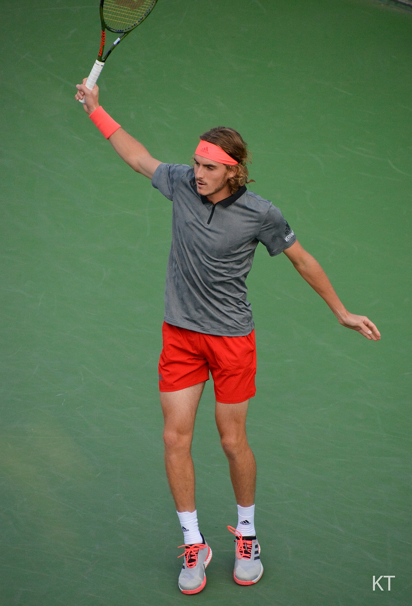

Μετά τη σπουδαία νίκη του επί του Τζόκοβιτς πήγε στην κάμερα που κάλυπτε τον αγώνα και έγραψε στον φακό της "pray for Greece" θέλοντας να δείξει ότι δεν ξεχνά την καταστροφή που βίωσε η χώρα και να αποτελέσει ένα φόρο τιμής στα θύματα της. Στις 20 Ιανουαρίου 2019 ο Τσιτσιπάς νίκησε τον Ρότζερ Φέντερερ στο Αυστραλιανό Όπεν, προχωρώντας στη φάση των 8 του πρωταθλήματος. Την επόμενη ημέρα κέρδισε τον Ισπανό Μπαουτίστα Αγκούτ και πέρασε στους ημιτελικούς του Australian Open. Στις 23 Φεβρουαρίου 2019 ο Στέφανος Τσιτσιπάς νίκησε τον Νταβίντ Γκοφέν στον ημιτελικό του τουρνουά της Μασσαλίας και προκρίθηκε στον τελικό.Στον τελικό έπαιξε με τον Μίκαϊλ Κουκούσκιν και τον νίκησε με 2 - 0. Στις 5 Μαΐου 2019 ο Στέφανος Τσιτσιπάς επικράτησε του Ουρουγουανού Πάμπλο Κουέβας (νούμερο 67 του κόσμου) με 2-0 σετ (6-3,7-6) στον τελικό του Millennium Estoril Open, που πραγματοποιήθηκε στο Εστορίλ της Πορτογαλίας. Αυτός ήταν ο τρίτος τίτλος για τον Έλληνα πρωταθλητή και πρώτος στην χωμάτινη επιφάνεια. Στον σημαντικότερο τίτλο της σταδιοδρομίας του, στις 17 Νοεμβρίου 2019 κατέκτησε τους τελικούς του ATP και αναρριχήθηκε στην 5η θέση στην παγκόσμια κατάταξη.
Πρώτα χρόνια
Ο Τσιτσιπάς γεννήθηκε στις 12 Αυγούστου 1998, γιος του Αποστόλη Τσιτσιπά και της Τζούλιας Αποστόλη (το γένος Σαλνίκοβα) στην Καρδίτσα. Ο πατέρας του είναι Έλληνας και η μητέρα του Ρωσίδα. Οι γονείς του είναι επαγγελματίες τενίστες, ενώ η μητέρα του ήταν νούμερο 1 στην κατηγορία νέων, ήταν εντός των κορυφαίων 200 παγκοσμίως και εκπροσώπησε την Σοβιετική Ένωση στο Φεντ Καπ.
"Στην ηλικία των έξι άρχισα να κάνω τα πρώτα μου μαθήματα τένις στο Tennis Club Glifada σε μια ομάδα με άλλα παιδιά στην ηλικία μου. Ο πρώτος προπονητής μου ήταν ο Γιώργος Σπηλιόπουλος που με δίδαξε για τη σημασία του αθλήματος, της πειθαρχίας, της εργασιακής ηθικής και της σωστής τεχνικής στο γήπεδο. Ήταν ένα πολύ σημαντικό βήμα για μένα να έχω έναν ταπεινό προπονητή σαν αυτόν να μου δίνει τα σωστά βήματα και να με κατευθύνει με τις γνώσεις του από την αρχή του χρόνου. Στην ηλικία των οκτώ μετακόμισα στον Γιώργο Φουντούκο, το άτομο που ανέπτυξε το παιχνίδι, την τεχνική, το footwork μου ως κατώτερος παίκτης. Ήταν μια μεγάλη αλλαγή στο τένις μου από τότε, είναι ένας πολύ έμπειρος προπονητής τένις με πολλές γνώσεις στο γήπεδο, έναν πολύ συμβατικό τρόπο ανάπτυξης τεχνικών και ένα μοναδικό μυαλό στο γήπεδο τένις. Είναι ο προπονητής του τένις μου στο σπίτι μέχρι σήμερα."


"Κατανόησα τη ζωή μου μέσα από το τέννις"
"Αφού ξεκίνησα με το παιχνίδι του τένις, υπήρξε μια κρίσιμη απόφαση που έπρεπε να κάνω, μια απόφαση που πλησίαζε όσο περνούσαν τα χρόνια. Αυτή η απόφαση ήταν το μέλλον μου. Θέλω να κάνω το τένις το επάγγελμά μου; Είμαι έτοιμος να θυσιάσω τη ζωή μου στην Ελλάδα για να ξεκινήσω να ταξιδεύω για τένις; Η απάντηση από τον 12χρονο εαυτό μου ήταν «Ναι, θέλω να το κάνω». Ήμουν έτοιμος για αυτό το μακρύ ταξίδι, αυτή τη μάχη που έπρεπε να αντιμετωπίσω, το άγχος, τις αϋπνίες νύχτες, την ένταση, την απογοήτευση, τα νεύρα, το άγχος ... Έπρεπε να αντιμετωπίσω έναν αντίπαλο, αλλά η μεγαλύτερη πρόκληση ήταν να ξεπεράσω το προσδοκίες. Επρόκειτο να εκμεταλλευτώ τις πιθανότητές μου, να αποτύχω τις περισσότερες φορές, αλλά αυτό ήταν και εξακολουθεί να είναι το κλειδί για την επιτυχή ανάπτυξη και κυνηγώντας ένα όνειρο που ήταν και είναι εκεί. Τίτλους που θέλουν πολλοί άνθρωποι, αλλά μόνο λίγοι. Το τένις με δίδαξε πολλά πράγματα στη ζωή μου. Έχω βιώσει πράγματα που διαφορετικά δεν θα είχα βιώσει αν δεν έπαιζα το άθλημα που αγαπώ. Το τένις μου επέτρεψε να δω νέα μέρη, να γνωρίσω νέους ανθρώπους, να ανακαλύψω πολιτισμούς… Κατάφερα να μετατρέψω το παιδικό μου χόμπι στο επάγγελμά μου. Ήταν ήδη απίστευτο! Το τένις μου έχει διδάξει πειθαρχία, αυτογνωσία, συμπεριφορά, ηθική, σεβασμό, αθλητισμό και λήψη αποφάσεων. Έχω τα πάντα σε αυτό το παιχνίδι, ένα παιχνίδι με το οποίο μεγάλωσα, έμαθα και απέτυχα τις περισσότερες φορές. Το τένις με αντιπροσωπεύει και όλα όσα έχω. Το τένις θα είναι πάντα η δουλειά μου και το πάθος μου. Το τένις είναι η ζωή μου!"